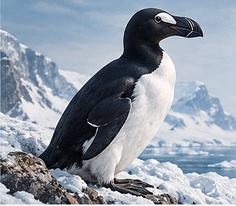

Great Auk
Comparative Genomics
LAB NOTEBOOK
A step-by-step guide to analysing genomic data from the Great Auk and its living relatives.
Continue LearningOverall Progress
0%
0 / 9 modules started
0 / 15 exercises complete
Start with Exercise 1
Find, download, and critically inspect a reference genome assembly.
Go to Exercise →Quick Links
Modules
Building Your Skills
Each module includes step-by-step exercises, background explanations, practice with Linux and genomics tools, and space for your own notes and questions.
A Real Research Project
Learn by doing, with real data and real questions, as you explore the genomics of the Great Auk and its living relatives.